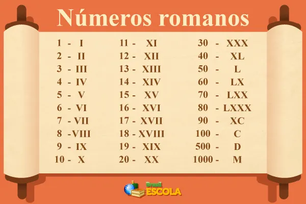

Sistema de Numeração Romano
O sistema de numeração romano utiliza letras do alfabeto latino para simbolizar quantidades fixas:
- I = 1
- V = 5
- X = 10
- L = 50
- C = 100
- D = 500
- M = 1000
Diferente do nosso sistema decimal posicional moderno, o sistema romano é essencialmente aditivo e subtrativo. Quando um símbolo de menor valor está à direita de um de maior valor, seus valores são somados (ex.: VI = 5 + 1 = 6). Quando o símbolo de menor valor é colocado à esquerda, seu valor é subtraído (ex.: IV = 5 - 1 = 4).
Para registrar números muito elevados, superiores a 1.000, os romanos utilizavam uma barra horizontal sobre o numeral (chamada de vinculum), o que multiplicava seu valor por 1.000. Por exemplo, a letra V com um travessão superior representava o número 5.000.
Embora esse sistema fosse muito eficiente para registrar quantidades de forma clara em monumentos, documentos e lápides, ele apresentava uma limitação considerável: era extremamente difícil realizar cálculos aritméticos complexos diretamente no papel (ou no papiro) utilizando apenas esses numerais gráficos.
Desafio: Sistema de Numeração Romano
Escolha uma alternativa em cada pergunta. A explicação aparece depois da sua tentativa.

Fonte: Brasil Escola. Algarismos romanos. Disponível em: https://brasilescola.uol.com.br/matematica/algarismos-romanos.htm. Acesso em: 21 nov. 2026.
Mapa

Fonte: Escola Kids. Disponível em: https://escolakids.uol.com.br/historia/imperio-romano-um-resumo.htm. Acesso em: 21 nov. 2026.